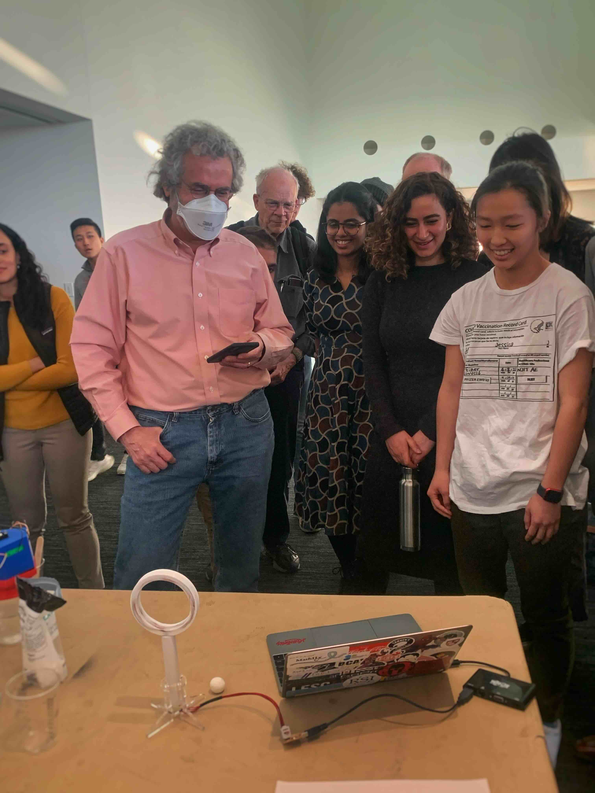

Score-Detecting Quidditch Hoop
Completed: December 2022
Submitted to the MAS.863 (How to Make Almost Anything) graduate course taught by Prof. Neil Gershenfeld at MIT.

Description:
Quidditch (now referred to as "quadball") is a sport from the world of Harry Potter. In the real-life adaptation, players compete to score a volleyball through a set of hula hoops. When a player attempts to shoot or dunk the ball, it is quite difficult to see if it actually traveled through the hoop because the view can often be obstructed.
This device automatically detects if the ball has passed through the plane of the hoop. It relies on Faraday's Law of Magnetic Induction which states that a changing magnetic field through a loop of wire produces a current. The ball is embedded with a magnet and the hoop contains a coil of wire so that when the ball travels through, a small current is picked up and signals the LEDs to light up. This design allows for other objects to pass through the hoop without being picked up by the sensor.
If you'd like to see more of the build process (as well as many other projects), check out my website documentation from the HTMAA class!
